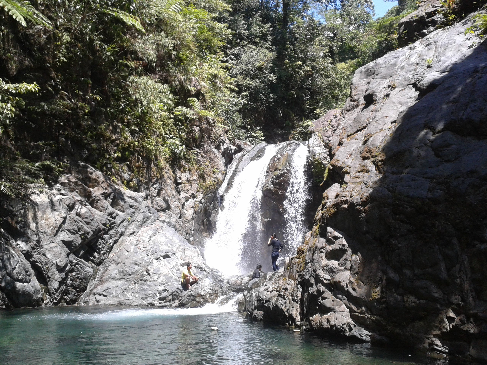
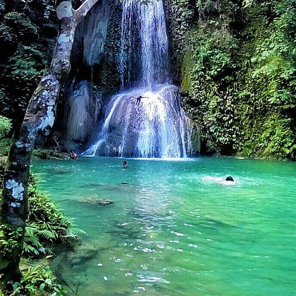
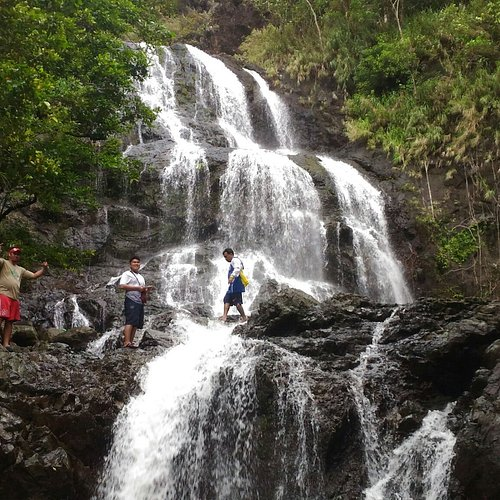

Overview
The waterfall is renowned for its dramatic drop and scenic rocky basin, providing visitors an ideal spot to cool off after trekking through dense forest paths. The surrounding tropical vegetation enhances the serene and natural setting.
Depalyon Falls is a 50-foot-high waterfall tucked deep within the forest of General Nakar, Quezon. Its cool basin and scenic surroundings make it a favorite among hikers and adventure seekers looking to enjoy refreshing mountain waters and pristine forest landscapes.

The waterfall is renowned for its dramatic drop and scenic rocky basin, providing visitors an ideal spot to cool off after trekking through dense forest paths. The surrounding tropical vegetation enhances the serene and natural setting.

Depalyon Falls is located in Barangay Sablang, General Nakar, Quezon. Visitors usually motor to the tourism center, ride a habal-habal to Depalyon Bridge, then trek approximately one hour along forest and river paths. Local guides are recommended for navigation and safety.

Set in the foothills of the Sierra Madre, the area features cool mountain waters, rocky formations, and dense tropical forest. The natural basin collects the waterfall water, providing swimming opportunities in a serene forested environment.

Activities include hiking, swimming, photography, and picnicking. Minimal facilities exist, but local guides and occasional rest stops are available. Registration and possible guide fees are required. Visitors should exercise caution on slippery rocks and river crossings.